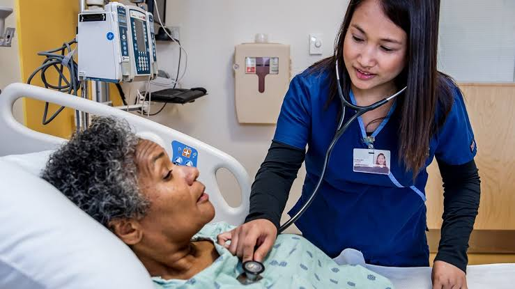
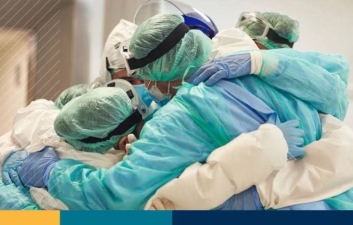

University of Immaculate Conception

San Antonio Agoo, La, Union
| immaculate@gmail.com |
09123456789 |
College of Nursing
A Bachelor of Science in Nursing (BSN) degree will provide you with an excellent foundation for a fulfilling, lifetime career as a nurse – one of the fastest growing professions in the U.S.
As one of the nation’s leading colleges of nursing, the UIC College of Nursing offers an excellent education with some of the nation’s foremost nursing leaders as your instructors. You will be surrounded by energetic and supportive peers, receive personal and professional guidance, and working with outstanding clinical partners.
UPPER DIVISION
Admission into the traditional Bachelor of Science in Nursing (BSN) program occurs at the junior level, after completion of 57 credit hours of college-level prerequisite coursework. First-year applicants will generally apply to Liberal Arts and Sciences - Undeclared, or Applied Health Sciences - Undeclared, and declare an educational goal of Pre-Nursing. Students may also transfer directly in after completing prerequisites at another university or college.
PROFESSIONAL
Upon completion of the traditional BSN program, you will be eligible to sit for the National Council Licensure Examination (NCLEX) for Registered Nurses in order to receive the RN license and practice as a nurse generalist.
GPPA OPTION
The highly competitive GPPA program allows a limited number of first-year students per year to be admitted to UIC with guaranteed admission to the BS in Nursing. Students follow a specific curriculum and meet established performance criteria to maintain guaranteed admission.

